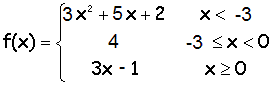

.

Descripción:
- Desarrollarás, en conjunto con
el profesor, los algoritmos de algunos problemas que requieren manejo de
condiciones. También verás la forma en cómo estos algoritmos puede
convertirse en un programa en Python.

Objetivo:
- Aplicar la estructura de
control if (if, else, elif anidados) y los operadores relacionales.

Modalidad:

Instrucciones:
Desarrolla e implementa, en conjunto con el profesor, los siguiente
algoritmos y programas:
-
Escribe un programa que pida que se teclee
un valor entero e indique si el número es:
-
Par positivo
-
Impar positivo
-
Par negativo
-
Impar negativo
-
Dados tres números enteros, que representan
la longitud de los lados de un triángulo, muestre en la pantalla el
tipo de triángulo de que se trata (equilatero, isósceles o
escaleno). Considera que X, Y y Z son los lados de un triángulo si
cumplen con las siguientes condiciones:
-
Todos los números son mayores que cero
-
X + Y > Z
-
X + Z > Y
-
Y + Z > X
-
Es decir, la suma de dos de las medidas
debe ser estrictamente mayor que la tercera.
-
Recuerda que el triángulo equilátero
tiene 3 lados iguales, el isósceles tiene 2 lados iguales y el
escaleno tiene los 3 lados diferentes.
-
Guarda tu archivo como:
B_matricula.py
-
Determina la relación existente entre dos
números (mayor, menor o igual). Guarda tu archivo como:
B_matricula.py
-
Calcula la corriente de un circuito
conociendo el voltaje y la resistencia, suponga que el valor de
la resistencia no puede ser negativa ni cero.
-
I = V / R
Donde I es la corriente, V el voltaje y R la resistencia.
-
Guarda tu archivo como:
B_matricula.py
-
Dadas tres cantidades enteras positivas,
que representan la longitud de los lados de un triángulo, se quiere
determinar las siguientes situaciones:
-
¿Es un triángulo equilátero? Si los
tres lados son de igual longitud.
-
¿Es un triángulo isósceles? Si dos de
los tres lados son de igual longitud y uno de distinta
longitud.
-
¿Es un triángulo escaleno? Si los tres
lados son de distinta longitud.
-
Guarda tu archivo como:
B_matricula.py
-
Determinar si un año es bisiesto. Un año es
bisiesto cuando es múltiplo de 4 y no de 100 o cuando es múltiplo
de 400.
-
1984 es bisiesto (es múltiplo de 4 y no
de 100)
-
1800 no es bisiesto
-
2000 si es bisiesto (es múltiplo de
400)
-
Guarda tu archivo como:
B_matricula.py

-
Determinar cualquiera de lo siguiente: la
velocidad alcanzada por un automóvil que recorre una distancia (d)
en un tiempo (t), o la distancia que recorre el coche, o el tiempo
en que recorre una distancia. Considera que los datos que necesites
los tiene que dar el usuario. Guarda tu archivo como:
B_matricula.py
|
Signo |
Periodo del año |
| Aries |
Del 21 de marzo al 20 de abril |
| Tauro |
Del 21 de abril al 21 de mayo |
| Géminis |
Del 22 de mayo al 21 de junio |
| Cáncer |
Del 22 de junio al 22 de julio |
| Leo |
Del 23 de julio al 23 de agosto |
| Virgo |
Del 24 de agosto al 23 de
septiembre |
| Libra |
Del 24 de septiembre al 23 de
octubre |
| Escorpión |
Del 24 de octubre al 22 de
noviembre |
| Sagitario |
Del 23 de noviembre al 21 de
diciembre |
| Capricornio |
Del 22 de diciembre al 20 de
enero |
| Acuario |
Del 21 de enero al 18 de febrero |
| Piscis |
Del 19 de febrero al 20 de marzo |
-
Simule una calculadora simple: Lee dos
números y un caracter. El caracter determina que
operación hacer con los dos números. Si es '+' entonces los
sumará, si es '%' entonces sacara el residuo del primero entre
el segundo. Las operaciones que debes incluir son: +,-,*,/,%.
Guarda tu archivo como:
B_matricula.py

Recursos:

Especificaciones
de entrega:
|